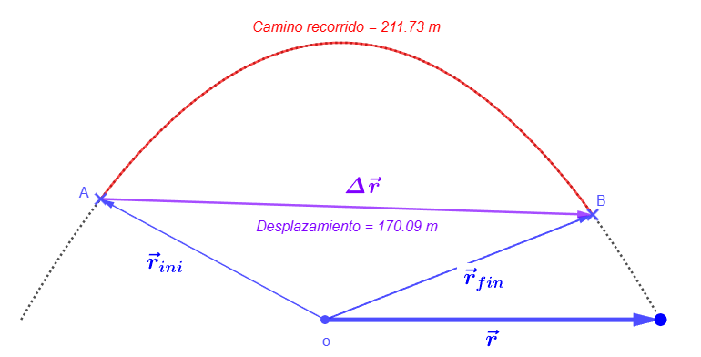
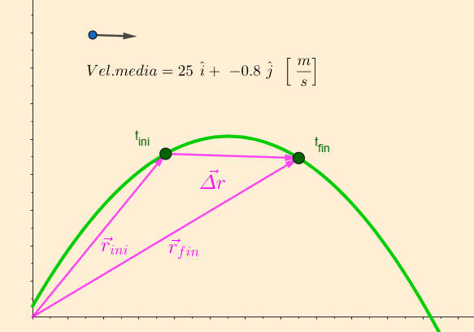
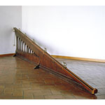
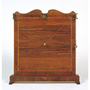
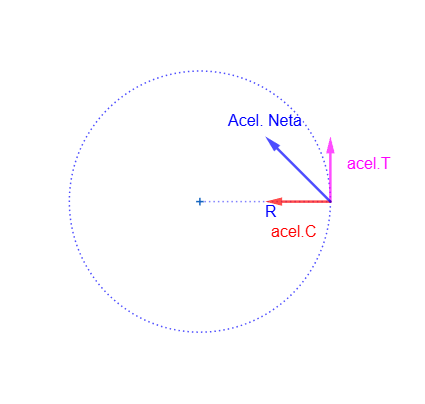
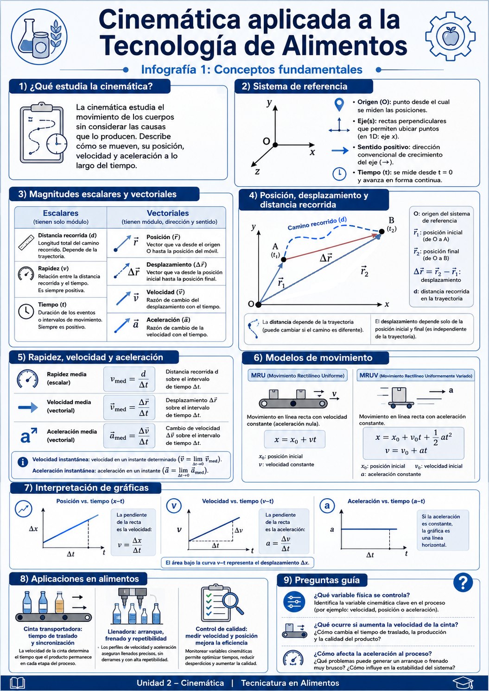
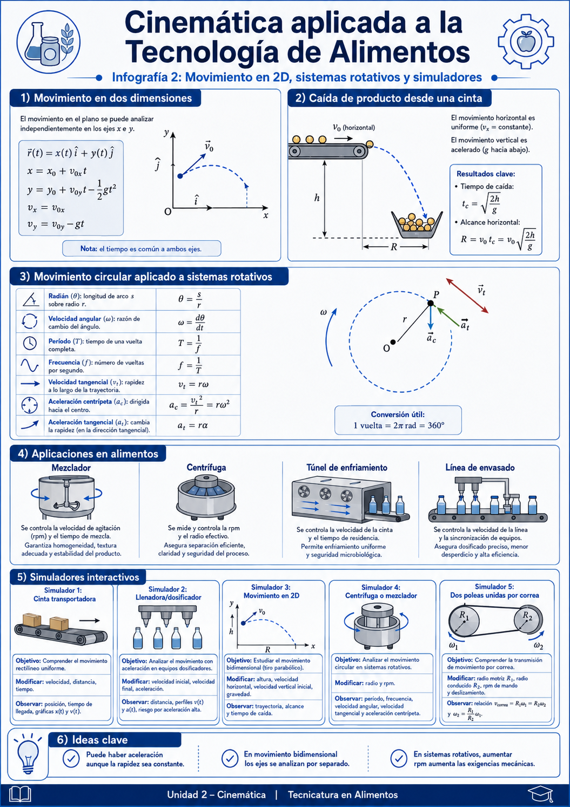
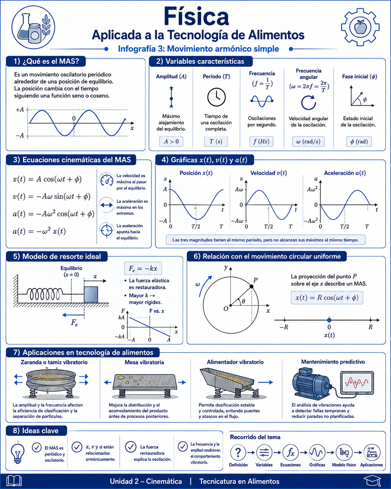

Definición
Describe cómo se mueven los cuerpos sin estudiar todavía las causas del movimiento.
Presentación introductoria del apunte de la Unidad 2.
Prof. Víctor Javier Koziura
Describe cómo se mueven los cuerpos sin estudiar todavía las causas del movimiento.
Distinguir posición, desplazamiento, distancia, rapidez, velocidad y aceleración.
Usar ecuaciones, componentes, límites y derivadas elementales.
Interpretar pendientes, áreas y curvaturas en x(t), v(t) y a(t).
Modelar cintas, dosificadores, caída de producto, mezcladores y centrífugas.
| Situación | Variable cinemática | Impacto técnico |
|---|---|---|
| Cinta | v, x(t) | Traslado, sincronización, acumulación |
| Llenadora | v, a | Precisión, repetibilidad, derrames |
| Túnel de enfriamiento | v y tiempo | Tiempo de residencia y temperatura final |
| Mezclador | ω, f | Homogeneidad y esfuerzo mecánico |
| Centrífuga | ac | Separación, integridad y seguridad |


Qué expresa: relaciona la distancia total recorrida con el tiempo empleado. Es una magnitud escalar; no contiene información de dirección.
Qué expresa: mide el cambio neto de posición por unidad de tiempo. Es vectorial y tiene la misma dirección que el desplazamiento \(\Delta\vec r\).
Qué expresa: es la velocidad del móvil en un instante. Se obtiene como derivada de la posición y su dirección es tangente a la trayectoria.
Es una recta. Su pendiente es la velocidad: pendiente positiva indica \(v_x>0\), negativa indica \(v_x<0\).
Es una línea horizontal. Su pendiente es cero y el área bajo la curva representa el desplazamiento.
Coincide con el eje temporal: en MRU no cambia la velocidad, por lo tanto la aceleración es nula.
El plano inclinado permitió reducir la aceleración efectiva y medir el movimiento con mayor precisión.

| Tiempo | Posición x (m) | Despl. 1 | Despl. 2 |
|---|---|---|---|
| 0 | 0.00 | 0 | 0 |
| 1 | 0.45 | 1 | 1 |
| 2 | 1.80 | 3 | 4 |
| 3 | 4.05 | 5 | 9 |
| 4 | 7.20 | 7 | 16 |
| 5 | 11.25 | 9 | 25 |
Cuando conocemos velocidades, aceleración y desplazamiento, pero no necesitamos el tiempo.
El término de aceleración modifica el cuadrado de la velocidad a medida que cambia la posición.

Pasajero respecto del barco + barco respecto de la costa.
Producto respecto de una cinta + cinta respecto de la estructura de la máquina.
El móvil recorre una circunferencia de radio \(r\). La velocidad tangencial siempre es tangente a la trayectoria. La aceleración centrípeta apunta hacia el centro y cambia la dirección de \(\vec v\). Si \(\alpha\neq 0\), también aparece aceleración tangencial, responsable de cambiar el módulo de la rapidez.
Tiempo empleado en dar una vuelta completa.
Número de vueltas por segundo. Se mide en hertz.
Rapidez con que cambia el ángulo, en radianes por segundo.

Oscilación periódica en torno de una posición de equilibrio \(x=0\).
| Sistema | Variable relevante | Impacto |
|---|---|---|
| Zaranda o tamiz | Amplitud y frecuencia | Separación y caudal |
| Mesa vibratoria | Desplazamiento y amax | Compactación o distribución |
| Alimentador vibratorio | f y fase | Dosificación estable |
| Mantenimiento | Amplitud y frecuencia dominante | Desbalance, holguras y fallas |
| Equipo | Medir | Controlar | Riesgo |
|---|---|---|---|
| Cinta | x, v | Rapidez | Desincronización |
| Llenadora | Tiempo, x | Avance / apertura | Derrames |
| Túnel | Tiempo de residencia | Velocidad de cinta | Proceso térmico insuficiente |
| Mezclador | rpm, tiempo | Frecuencia de giro | Sobreprocesamiento |
| Centrífuga | rpm, vibración | ω | Falla mecánica |
Camino total frente a cambio neto.
Escalar frente a vector.
Depende del eje elegido.
No usar x=x₀+vt si hay aceleración.
Rapidez constante no implica a=0.
La caída vertical no modifica vₓ si aₓ=0.
| Cinta 0,50 m/s; 3,0 m | t = 6,0 s |
| 0 → 0,80 m/s en 4 s | a = 0,20 m/s² |
| Caída desde 0,80 m | t ≈ 0,40 s |
| 600 rpm; r=0,20 m | ω ≈ 62,8 rad/s |
| r=0,20 m; ω=62,8 rad/s | ac ≈ 789 m/s² ≈ 80 g |



[A] Koziura, Víctor Javier. Unidad 2 – Cinemática. Física aplicada a la Tecnología de Alimentos. Apunte didáctico adjunto.
[T] Tippens, Paul E. Física, conceptos y aplicaciones, 7.ª ed. revisada. Cap. 6 (aceleración uniforme), cap. 10 (movimiento circular), cap. 14 (movimiento armónico simple).
[G] Giancoli, Douglas C. Física. Principios con aplicaciones, 6.ª ed., vol. 1. Caps. 2, 3, 5 y 11.
[YF] Young, Hugh D.; Freedman, Roger A. Física universitaria con física moderna, 14.ª ed., vol. 1. Caps. 2, 3, 9 y 14.
[S] Serway, Raymond A.; Jewett, John W. Física para ciencias e ingeniería, 7.ª ed., vol. 1. Caps. 2, 4, 6 y 15.
[MG] Museo Galileo. Recursos históricos del plano inclinado y composición de movimientos utilizados en el apunte.